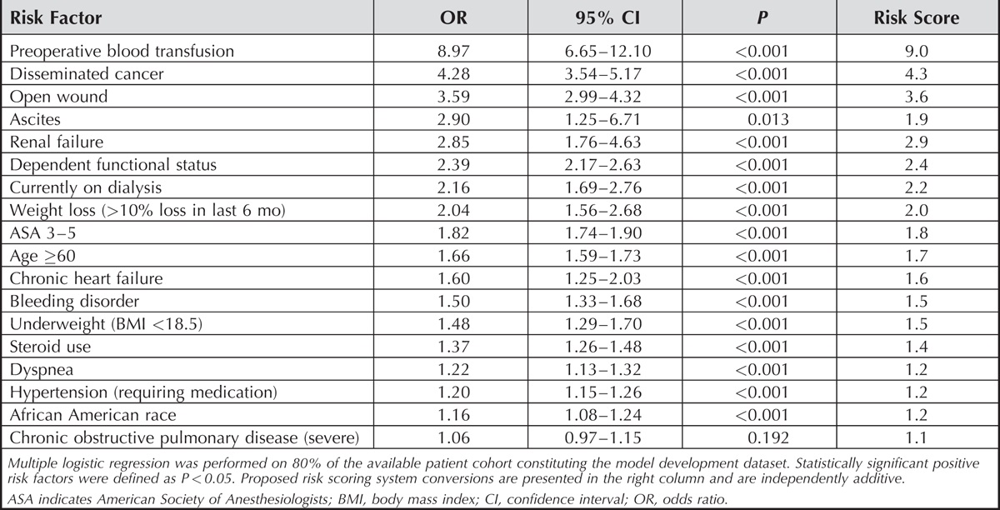

Помогают ли нам модели прогнозирования осложнений?

Традиционное принятие хирургических решений подразумевает взвешивание рисков и преимуществ операции, при этом хирурги, как правило, консультируют пациентов, основываясь на вероятных исходах и показателях осложнений для “среднего” пациента. Однако такая информация может быть не особенно полезной для отдельных пациентов, большинство из которых не являются “среднестатистическими” и могут иметь прогнозируемые исходы и профили риска, значительно отличающиеся от профиля “среднестатистического” пациента.
Для того чтобы устранить это ограничение традиционного совместного принятия решений, исследователи работают над созданием моделей прогнозирования исходов и коэффициентов осложнений на основе индивидуальных характеристик. Большинство из них рассматривали конкретные диагнозы и операции и включали компьютерные многомерные модели. К сожалению, большинство хирургов в занятой клинической практике не используют эти модели, так как они громоздки и требуют много времени. Для того, чтобы улучшить клиническую полезность модели прогнозирования риска,
Эндрю Брода и его коллеги проанализировали базу данных NSQIP, которая включает более 48 000 операций по спондилосинтезу шейных позвонков и почти 130 000 поясничных процедур (в нее были включены как декомпрессии, так и спондилосинтез). Эта модель была использована для создания скоринговой системы по 0-12 точкам, основанной на количестве сопутствующих заболеваний, которые предсказывали общую частоту осложнений для шейной и поясничной хирургии. Осложнения регистрировались в течение 30 дней после операции и включали, в частности, послеоперационное переливание крови, инфекцию хирургической раны, тромбоз вен, ТЭЛА, острый коронарный синдром, урогенитальную инфекцию, повторную интубацию и инсульт. Повторные госпитализации и повторные операции в список осложнений не включались.
Они выявили 16 факторов, независимо связанных с частотой осложнений, включая возраст старше 59 лет, ASA баллы 3-5, гипертонию, почечную недостаточность, хроническую сердечную недостаточность, ожирение (ИМТ > 18.5), рак и ХОБЛ. Каждый фактор был одинаково взвешен в их системе баллов. В поясничной когорте общий уровень осложнений составил 12,4%, варьируя от 4% для тех, кто набрал 0 баллов (25% пациентов), до 11% для тех, кто набрал 3 балла (22% пациентов), и до 63% для тех, кто набрал 12 и более баллов (0,2% пациентов). Шейная когорта имела аналогичное распределение по баллам и несколько более низкий общий уровень осложнений (8%). Авторы нашли хорошее согласие с внутренним валидационным анализом с использованием 20% набора данных, не использованных для создания модели. Кривые операторов-получателей показали справедливую прогностическую точность с областью 0,77 под кривой для шейной модели и 0,740 для поясничной модели.

Авторы проделали хорошую работу, используя большие данные, для создания достаточно точной модели прогнозирования частоты осложнений, использующей простой алгоритм оценки для шейной и поясничной процедур. Данное исследование имеет все ограничения, связанные с использованием больших административных исследований баз данных, хотя такие факторы, как неверное кодирование данных или отсутствие данных, скорее всего, не оказали значительного влияния на результаты, учитывая большое количество вовлеченных пациентов.
Основные ограничения в большей степени связаны с характеристиками пациентов и осложнениями, использованными при построении модели. В попытке упростить модель все осложнения, начиная от переливания крови и заканчивая остановкой сердца, были объединены. Аналогичным образом, факторы риска, включая распространенный рак (с отношением шансов 4,3 в случае осложнения) и афроамериканскую расу (отношение шансов 1,2), имели равный вес в оценочной системе. Неспособность дифференцировать пациентов с одноуровневой ламинэктомией от пациентов с многоуровневым спондилосинтезом также приводит к потере информации в модели, что, вероятно, ограничивает ее точность.
Авторы сделали эти компромиссы для того, чтобы упростить оценочную систему и сделать ее более пригодной для использования в клинической практике. Однако, эти чрезмерные упрощения, возможно, ограничили то, насколько сильно модель влияет на процесс принятия решений, выходя за рамки общих показателей осложнений, возникающих при проведении крупных исследований на “среднего” пациента. В поясничной когорте 70% пациентов имели оценку 0-3, а прогнозируемая частота осложнений варьировалась от 4% до 11%. Пациент мог получить оценку “три”, будучи 60-летним афроамериканцем с гипертонической болезнью и отсутствием других сопутствующих заболеваний. Аналогичным образом, онкологический пациент, находящийся на диализе и нуждающийся в дооперационном переливании, также получил бы 3 балла, несмотря на значительно более высокий риск осложнений. Эта модель действительно служит хорошим напоминанием о том, что увеличение числа сопутствующих заболеваний увеличивает риск осложнений. Сколько она добавляет, помимо усилий хирургов, еще предстоит увидеть.
По материалам журнала Spine